비유로 이해하는 개발 개념 갤러리
웹 기초부터 백엔드, 배포, 개발 도구까지 — 하나의 비유로 풀어낸 12컷 이미지 스토리 모음입니다. 카드를 눌러 바로 이동하세요.
39개 시리즈
01
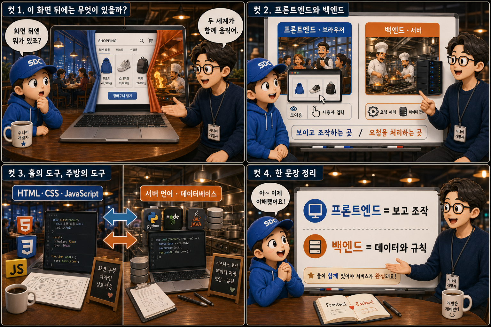
프론트엔드와 백엔드 — 클라이언트와 서버는 무엇을 나눠 갖는가
레스토랑의 홀과 주방에 비유해, 프론트엔드와 백엔드가 각각 무엇을 책임지는지 12컷 이미지 스토리로 풀어봅니다.
02
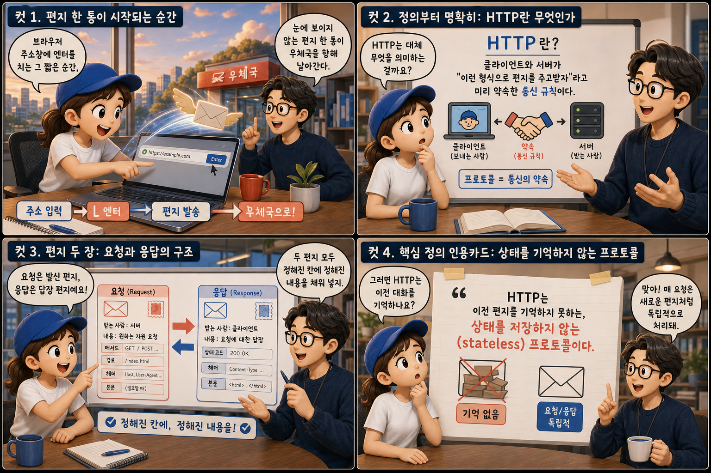
HTTP 요청과 응답 — 주소창에 엔터를 치면 무슨 일이 벌어지는가
편지 주고받기에 비유해, 브라우저 주소창에 엔터를 치는 순간부터 화면이 뜨기까지 HTTP 요청과 응답의 여정을 12컷 이미지 스토리로 풀어봅니다.
03
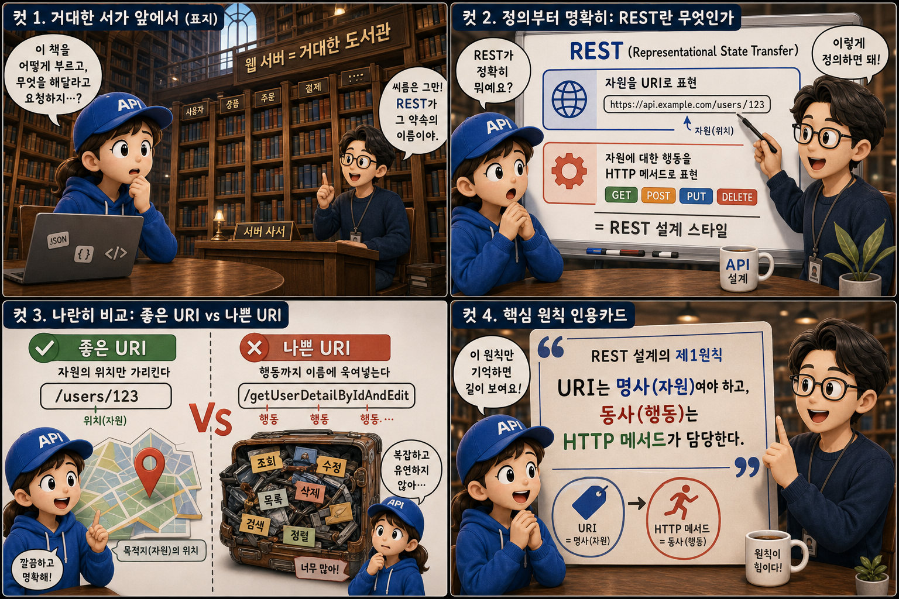
REST API 설계 — 자원을 다루는 약속
도서관 사서에 비유해, 서버의 자원을 어떤 이름(URI)으로 부르고 어떤 동작(HTTP 메서드)으로 다룰지 약속하는 REST API 설계를 12컷 이미지 스토리로 풀어봅니다.
04
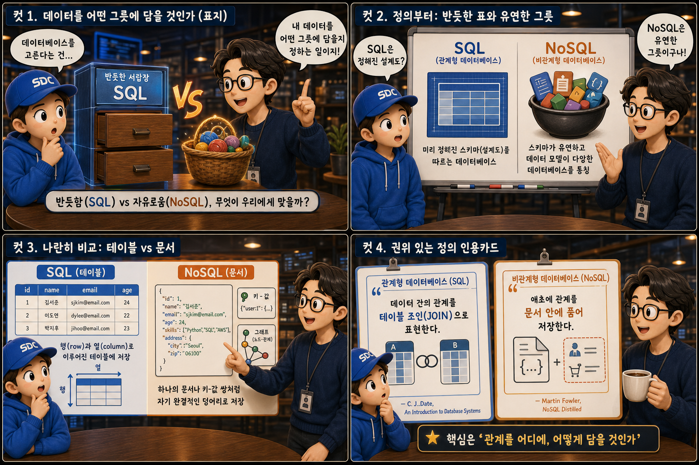
SQL과 NoSQL — 데이터를 담는 그릇은 어떻게 고르는가
정돈된 서랍장과 자유로운 바구니에 비유해, SQL과 NoSQL이 데이터를 어떻게 담고 꺼내는지 12컷 이미지 스토리로 풀어봅니다.
05
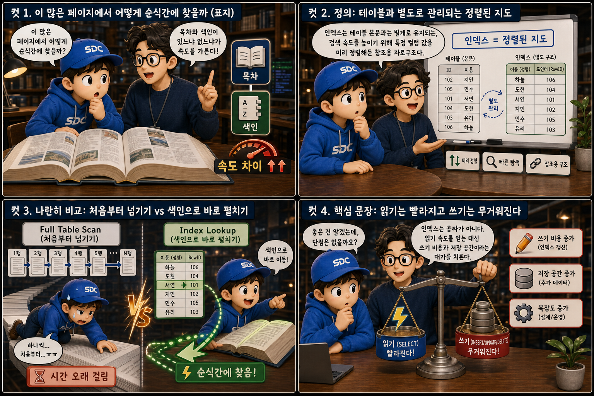
데이터베이스 인덱스 — 책의 색인처럼 빠르게 찾기
두꺼운 백과사전의 색인에 비유해, 데이터베이스 인덱스가 무엇이고 왜 빠른지, 그리고 어떤 대가를 치르는지 12컷 이미지 스토리로 풀어봅니다.
06
트랜잭션과 ACID — 이체 도중 정전이 나도 돈이 사라지지 않는 이유
은행 금고의 이체 의식에 비유해, 트랜잭션과 ACID가 어떻게 반쪽짜리 데이터를 막아주는지 12컷 이미지 스토리로 풀어봅니다.
07
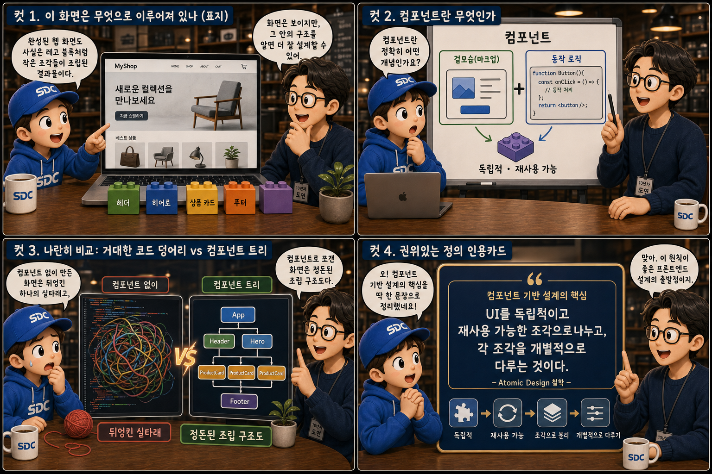
컴포넌트 기반 프론트엔드 — 레고 블록처럼 UI 조립하기
레고 블록 조립에 비유해, 복잡한 화면을 작은 컴포넌트로 나눠 관리 가능하게 만드는 방법을 12컷 이미지 스토리로 풀어봅니다.
08
상태 관리 — 화면이 기억해야 할 것들
여러 사람이 함께 보는 회의실 화이트보드에 비유해, 화면이 기억해야 할 상태를 누가 어떻게 관리하는지 12컷 이미지 스토리로 풀어봅니다.
09
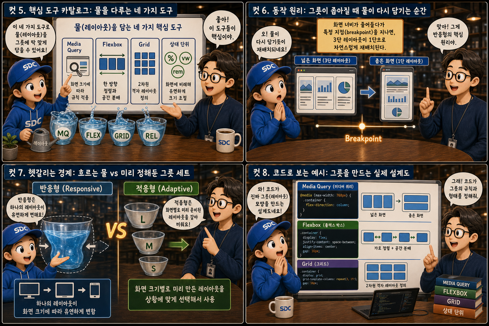
3계층 웹 아키텍처 — 건물처럼 층을 나누는 이유
로비·사무실·창고가 있는 3층 건물에 비유해, 웹 서비스가 프레젠테이션/로직/데이터 세 겹으로 나뉘어 설계되는 이유를 12컷 이미지 스토리로 풀어봅니다.
10
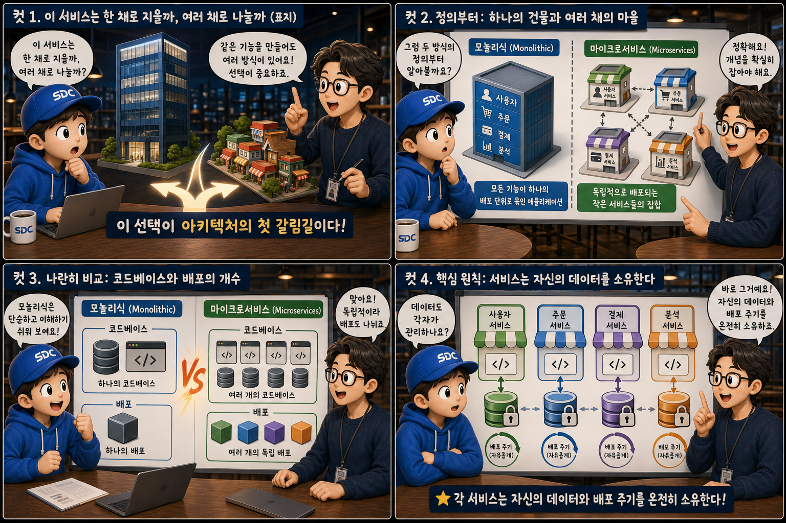
모놀리식과 마이크로서비스 — 한 채의 건물이냐, 여러 채의 마을이냐
한 채의 큰 건물과 작은 가게들이 모인 마을에 비유해, 모놀리식과 마이크로서비스 아키텍처의 차이와 트레이드오프를 12컷 이미지 스토리로 풀어봅니다.
11
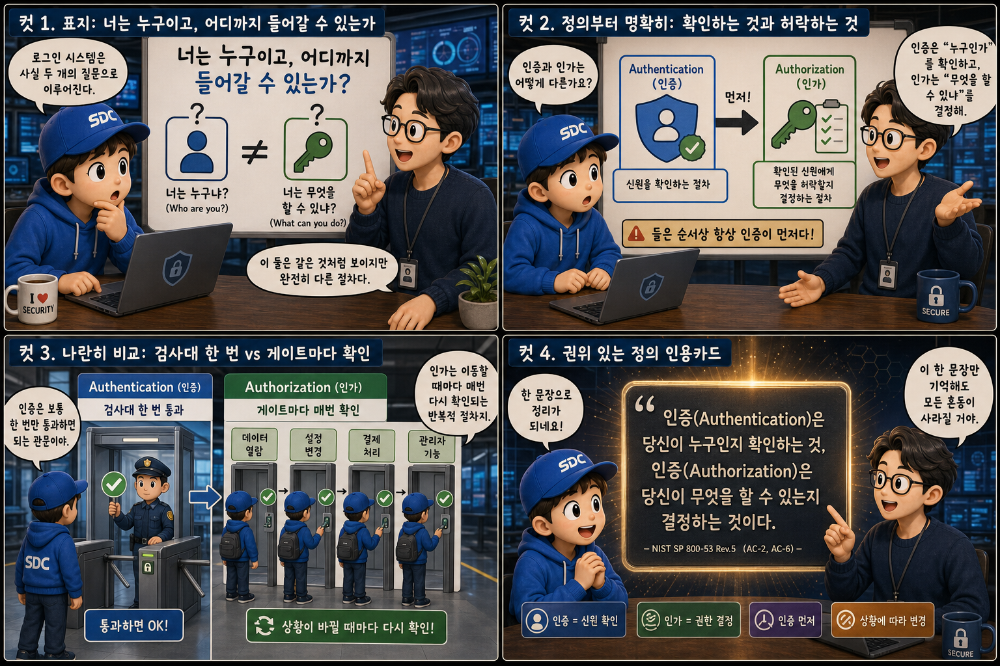
인증과 인가 — "너는 누구냐"와 "무엇을 할 수 있냐"
공항의 여권 검사대와 탑승 게이트에 비유해, Authentication과 Authorization이 각각 무엇을 확인하고 결정하는지 12컷 이미지 스토리로 풀어봅니다.
12
캐싱 전략 — 매번 다시 계산하지 않는 지혜
냉장고와 밑반찬 통에 비유해, 캐시 히트와 캐시 미스, TTL과 캐시 무효화까지 캐싱 전략을 12컷 이미지 스토리로 풀어봅니다.
13
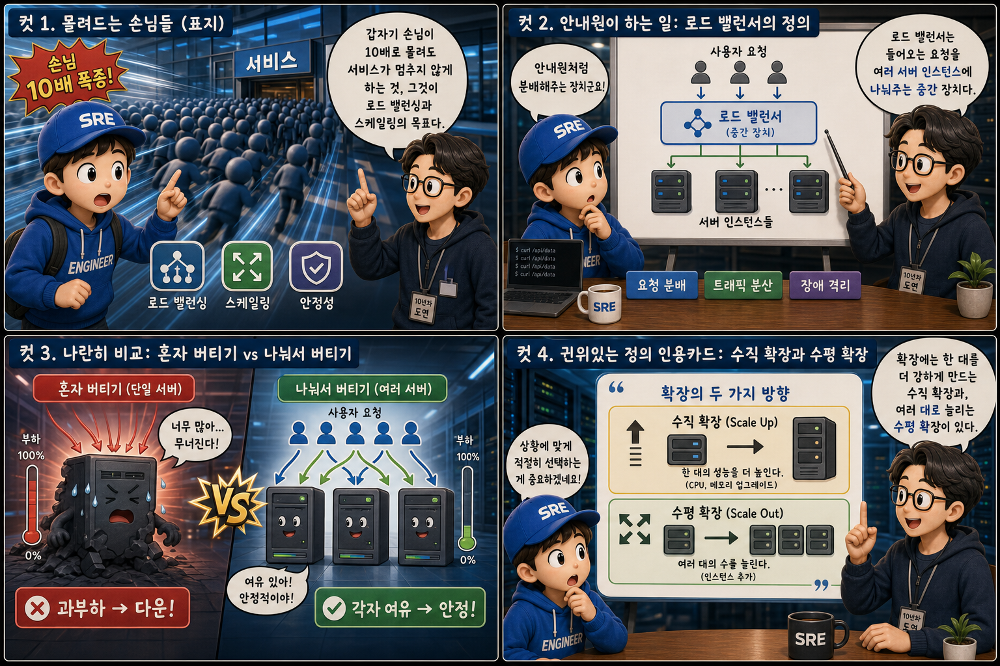
로드 밸런싱과 스케일링 — 트래픽 폭주에도 버티는 법
여러 계산대가 있는 마트에 비유해, 로드 밸런서와 스케일링이 트래픽 폭주 속에서 서비스를 어떻게 지켜내는지 12컷 이미지 스토리로 풀어봅니다.
14
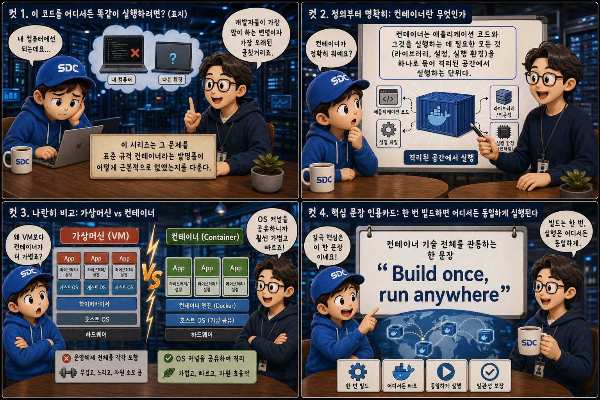
컨테이너와 Docker — 어디서든 똑같이 돌아가는 상자
표준 규격 운송 컨테이너에 비유해, 컨테이너와 Docker가 '내 컴퓨터에선 되는데' 문제를 어떻게 근본적으로 없애는지 12컷 이미지 스토리로 풀어봅니다.
15
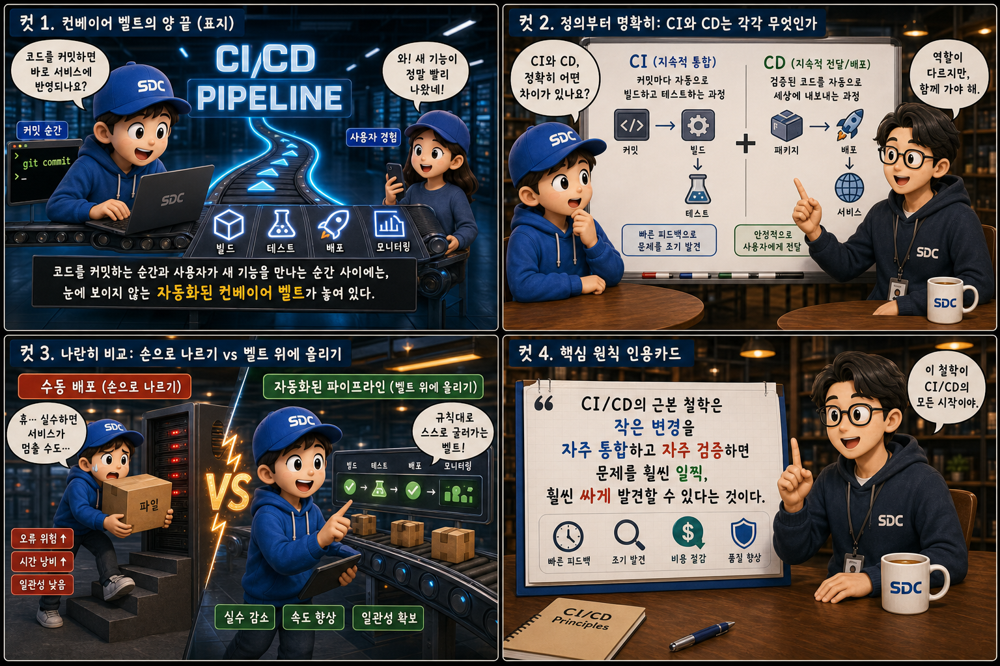
CI/CD 파이프라인 — 코드가 배포되기까지의 컨베이어 벨트
공장의 컨베이어 벨트에 비유해, 커밋 한 번이 어떻게 자동으로 검증되고 배포까지 이어지는지 12컷 이미지 스토리로 풀어봅니다.
16
웹 보안 기초 — XSS·CSRF·SQL 인젝션 막기
성벽과 경비 시스템에 비유해, XSS·CSRF·SQL 인젝션이 어떻게 이뤄지고 어떻게 방어하는지 12컷 이미지 스토리로 풀어봅니다.
17
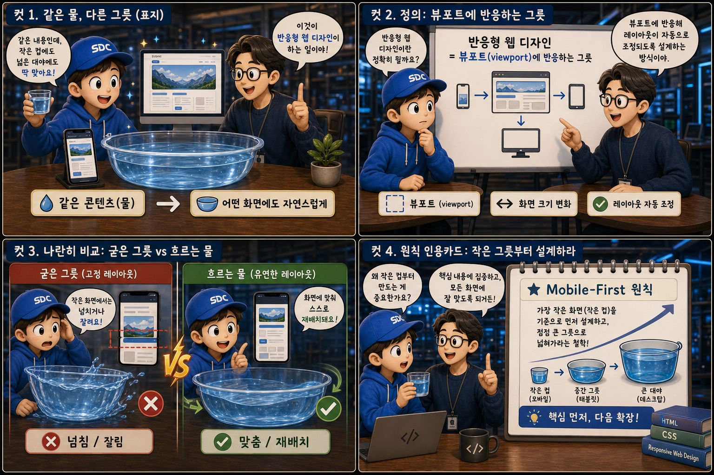
반응형 웹 디자인과 CSS — 화면 크기에 맞춰 흐르는 레이아웃
같은 물이 컵에도 대야에도 자연스럽게 담기듯, 하나의 레이아웃이 휴대폰과 모니터 모두에 맞춰 흐르는 원리를 12컷 이미지 스토리로 풀어봅니다.
18
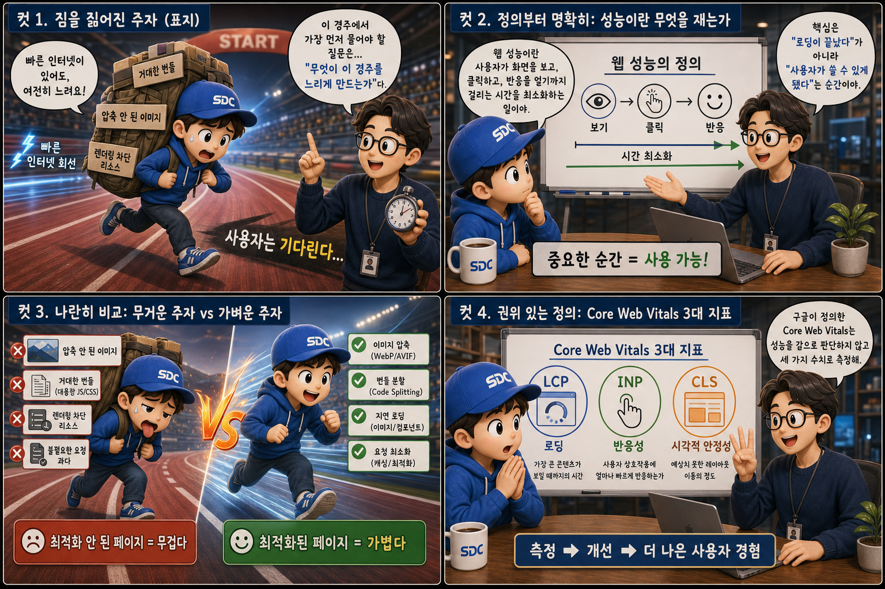
웹 성능 최적화 — 사용자를 기다리게 하지 않는 기술
릴레이 경주 트랙에 비유해, 무엇이 웹을 느리게 만들고 Core Web Vitals와 최적화 기법으로 어떻게 빠르게 만드는지 12컷 이미지 스토리로 풀어봅니다.
19
테스트 전략 — 단위·통합·E2E 테스트 피라미드는 어떻게 쌓는가
넓은 기반과 좁은 꼭대기를 가진 피라미드에 비유해, 버그를 어디서 얼마나 촘촘하게 잡을지 12컷 이미지 스토리로 풀어봅니다.
20
웹소켓과 실시간 통신 — 계속 열려 있는 대화 채널
편지를 나르는 우체부와 끊지 않는 전화 통화에 비유해, HTTP와 웹소켓이 실시간 통신을 어떻게 다르게 다루는지 12컷 이미지 스토리로 풀어봅니다.
21
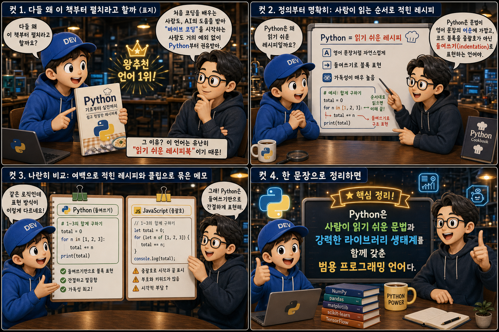
Python — 왜 비개발자도 이 언어부터 배우는가
누구나 읽을 수 있는 요리책에 비유해, 비개발자와 AI 바이브 코딩 입문자 모두 왜 Python부터 배우는지 12컷 이미지 스토리로 풀어봅니다.
22
Node.js — 브라우저 밖에서 실행되는 자바스크립트
무대 위 배우와 백스테이지 배우에 비유해, Node.js가 어떻게 브라우저 밖에서 자바스크립트를 실행시키는지 12컷 이미지 스토리로 풀어봅니다.
23
FastAPI — 타입 힌트 하나로 검증과 문서화를 동시에 얻는 법
안내판까지 스스로 그려 붙이는 접수창구에 비유해, FastAPI의 타입 힌트 자동 검증과 자동 문서화를 12컷 이미지 스토리로 풀어봅니다.
24
SQLite — 파일 하나가 데이터베이스가 되는 마법
포켓 수첩과 은행 창고에 비유해, 서버 없이 파일 하나로 동작하는 임베디드 데이터베이스 SQLite의 원리와 한계를 12컷 이미지 스토리로 풀어봅니다.
25
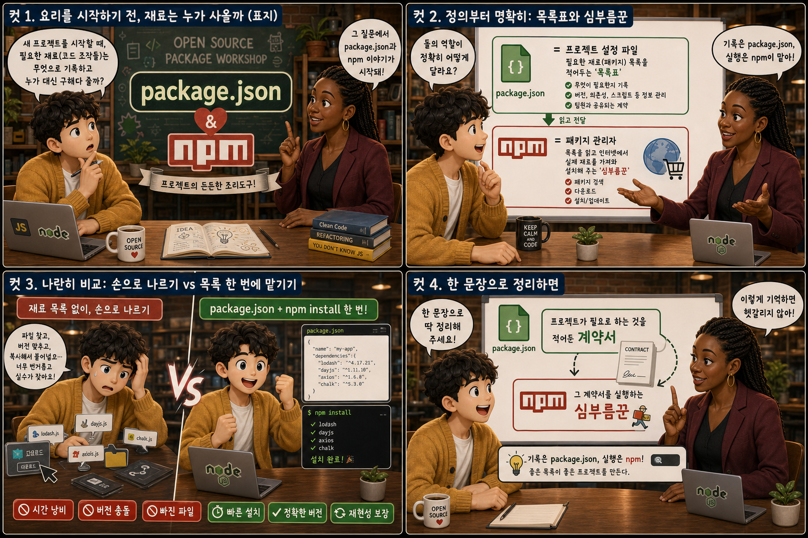
npm과 package.json — 프로젝트의 재료 목록
재료 목록표와 심부름꾼에 비유해, package.json은 무엇이고 npm은 왜 필요한지를 12컷 이미지 스토리로 풀어봅니다.
26
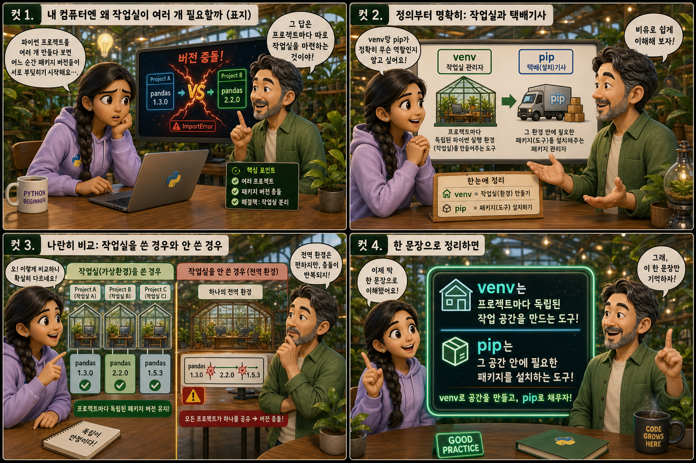
pip와 가상환경(venv) — 파이썬 패키지를 안전하게 관리하기
프로젝트마다 따로 마련한 작업실에 비유해, venv와 pip가 각각 무엇을 해결하는지 12컷 이미지 스토리로 풀어봅니다.
27
Git과 GitHub — 코드의 시간여행과 백업
게임 속 세이브 포인트와 인터넷 저편의 클라우드 창고에 비유해, Git과 GitHub가 각각 무엇을 책임지는지 12컷 이미지 스토리로 풀어봅니다.
28
.env와 환경변수 — 비밀번호를 코드에 적지 않는 법
현관문에 써 붙인 포스트잇과 잠긴 서랍에 비유해, .env 파일과 환경변수로 비밀번호와 API 키를 코드에서 분리하는 법을 12컷 이미지 스토리로 풀어봅니다.
29
Express.js — Node.js로 서버를 만드는 가장 쉬운 길
벽돌부터 손으로 쌓는 Node.js와, 이미 세워진 골조에 문만 달면 되는 Express. 그 차이를 12컷 이미지 스토리로 풀어봅니다.
30
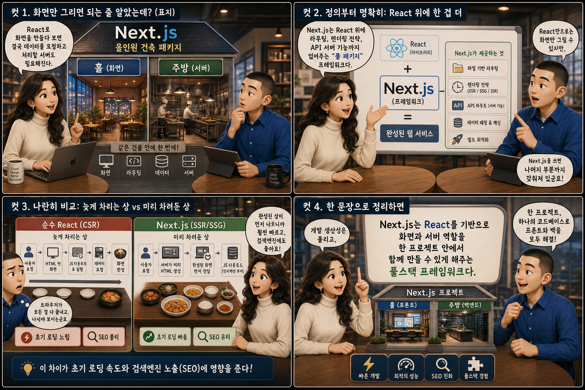
Next.js — 프론트와 백엔드를 한 프로젝트에 담다
레스토랑 건물 하나에 비유해, React가 짓는 홀과 Next.js가 함께 올리는 작은 주방이 어떻게 한 프로젝트 안에서 공존하는지 12컷 이미지 스토리로 풀어봅니다.
31
ORM(SQLAlchemy/Prisma) — SQL 없이 데이터베이스와 대화하는 법
데이터베이스는 SQL이라는 외국어로만 말합니다. 통역사 비유로 ORM(SQLAlchemy/Prisma)이 SQL 없이 어떻게 데이터베이스와 대화하게 해주는지 12컷 이미지 스토리로 풀어봅니다.
32
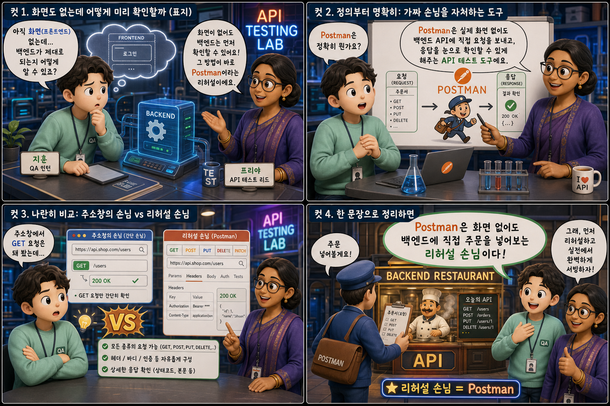
Postman, 화면 없이도 백엔드를 확인하는 법
실제 손님 없이 주방을 시험 가동해보는 리허설 룸에 비유해, API 테스트 도구 Postman을 12컷 이미지 스토리로 풀어봅니다.
35
Vercel/Netlify — 클릭 몇 번으로 내 사이트를 세상에 공개하기
이미 다 갖춰진 전시관에 작품만 걸면 그날로 문을 여는 '즉시 개관 갤러리'에 비유해, Vercel과 Netlify가 코드를 어떻게 세상에 배포하는지 12컷 이미지 스토리로 풀어봅니다.
36
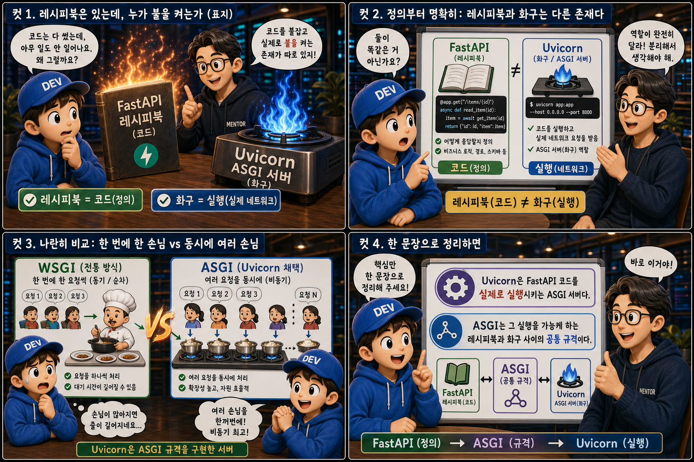
Uvicorn과 ASGI — FastAPI를 실제로 실행시키는 엔진
레시피북(FastAPI)과 화구(Uvicorn)에 비유해, 코드가 실제로 서버가 되는 순간을 12컷 이미지 스토리로 풀어봅니다.
37
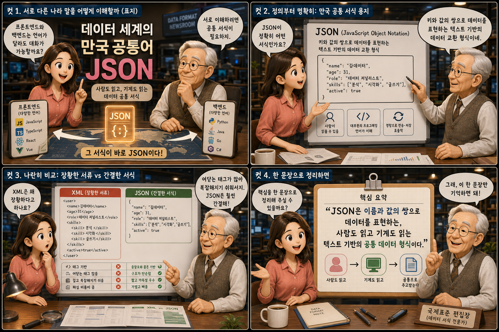
JSON — 프론트엔드와 백엔드가 주고받는 공통 언어
서로 다른 언어로 만들어진 프론트엔드와 백엔드가 오해 없이 데이터를 주고받는 방법, 만국 공통 서식 용지 JSON을 12컷 이미지 스토리로 풀어봅니다.
38
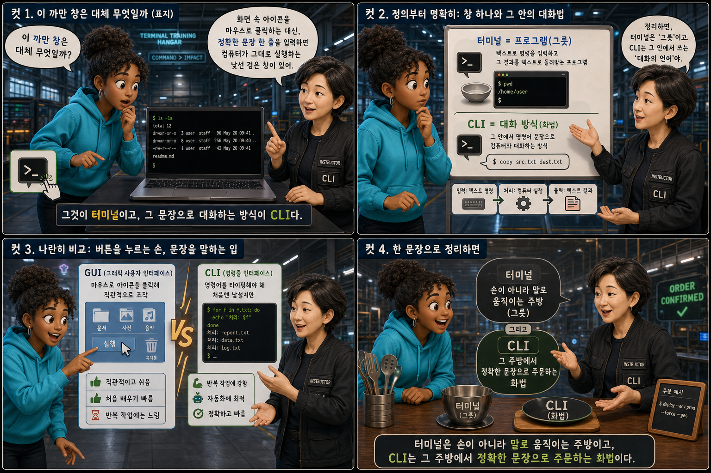
터미널과 CLI — 클릭 대신 명령어로 말하기
손이 아니라 말로 움직이는 주방에 비유해, 터미널과 CLI가 무엇이고 왜 개발자들이 마우스 대신 키보드로 컴퓨터와 대화하는지 12컷 이미지 스토리로 풀어봅니다.
39
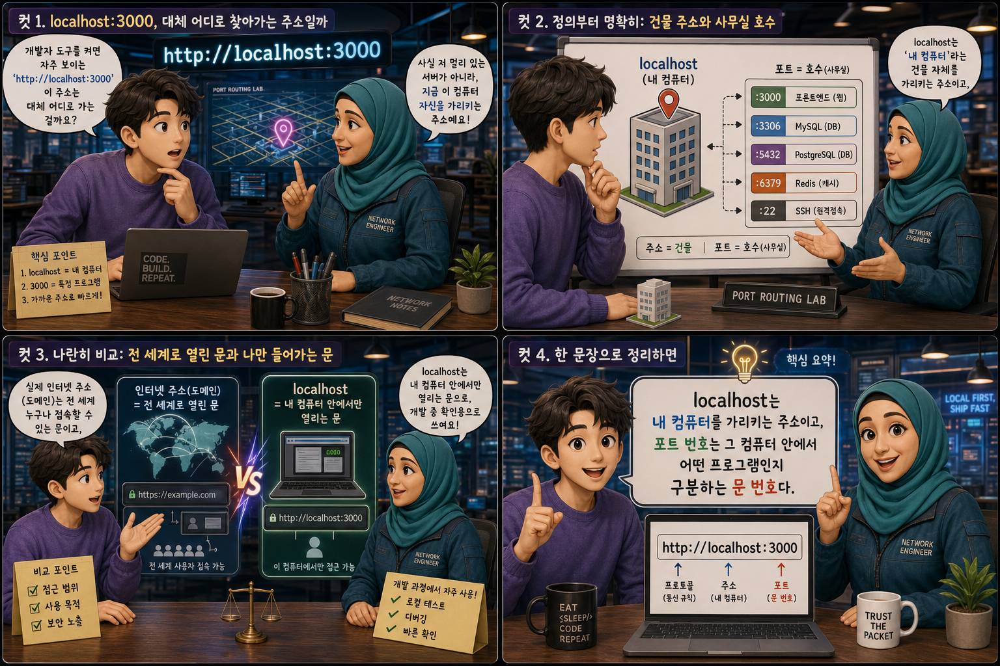
localhost와 포트 번호 — 내 컴퓨터 안의 주소 체계
건물 하나와 그 안의 사무실 호수에 비유해, localhost와 포트 번호가 정확히 무엇을 가리키는지 12컷 이미지 스토리로 풀어봅니다.
검색어와 일치하는 시리즈가 없습니다.